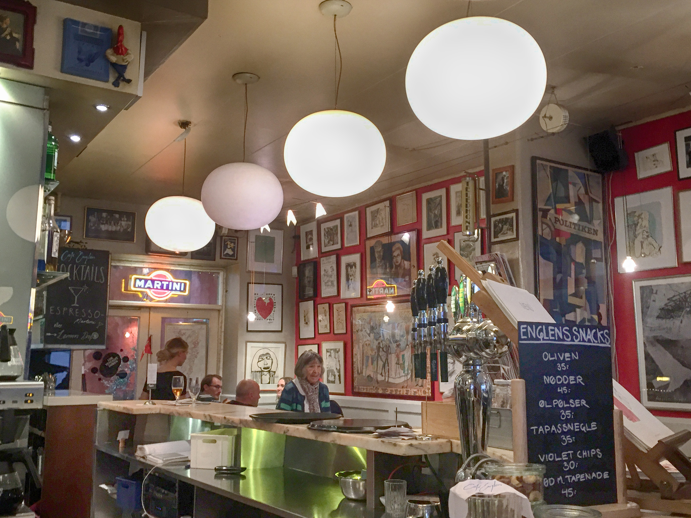

Anmeldelse af Café Englen
I det hyggelige latinerkvarter, et stenkast væk fra den travle gågade midt i Aarhus, ligger den lille café, Cafe Énglen.
Caféen ser ikke ud af meget udefra, med den en lidt triste facade er den egenlig ikke særligt indbydende, men lige så snart man træder ind i caféen oplever man en uventet hyggelig og varm stemning.
Noget for enhver
Caféen bliver brugt af mange unge, både om dagen til at studere, men også om eftermiddagen og aftenen til hygge, hvilket det kan man også mærke på caféens udvalg.
Der er noget for enhver, en lang række forskellige kaffer, hvor der også er f.eks. veganske alternativer til mælk, forskellige slags øl og sodavand og endda også en god portion drinks, der altså noget til alle.
 At der er noget til enhver type ses også på de besøgende – der er næsten alle typer af unge i forskellige aldre, og trods den overvejende mængde af unge, har et par ældre og børnefamilier også sneget sig ind på caféen.
Ude i caféens gårdhave er der fyldt med unge mennesker. Nogle sidder i små grupper med deres computere og studerer, andre får sig en øl, mens et par stykker endda sidder og spiller backammon.
Muligheder for at studere
Café Englen er altså en populær café, med få pladser i forhold til sin popularitet. Det vil altså sige, at hvis du for eksempel er ude efter en café, hvor du kan studere med dine venner mens I får jeg en kop kaffe, kan det altså bedst anbefales, at I gør det på en selvstudiedag, inden der bliver travlt om eftermiddagen.
Ud over at caféen er proppet om eftermiddagen, er caféen meget studievenlig. Der er mange skønne pladser indenfor i caféens inspirerende lokale, med mulighed for strøm og forskellige pladser, alt efter hvor mange I kommer som gruppe.
Der er desuden WIFI til fri afbenyttelse, hvilket selvfølgelig også er vigtigt hvis man skal sidde på caféen og lave studierelateret arbejde.
SU-venlig kaffe
Der er som sagt et lækkert og bredt udvalg af kaffe, for hver en smag. Prisen på deres kaffe ligger i den lave ende af de sædvanlige café priser, for eksempel koster en cappuccino 35 kr. dog koster refill af din kaffe kun 15 kr., så der er rig mulighed for at drikke en del kaffe til billige penge, hvis man sidder og terper på caféen en hel dag. Og hvis du bliver sulten, så har caféen desuden et bredt udvalg af både små snacks og varm mad, til fair priser.

Den skjulte perle i latinerkvarteret
Café Englen er helt klart en af de hyggeliste caféer jeg har besøgt i Aarhus. Caféen som ellers ligger nede af en smuk, men ofte mennesketom gade og bygningen med den kedelige facade gemmer på en hyggelig lille perle, midt i Aarhus, hvor man kan en lækker kop kaffe og en lille pause fra den ellers travle by.
Caféen har altså noget til enhver smag, og kan klart anbefales både som café til at studere på, men også til, at drikke en øl med vennerne i hyggelige omgivelser.
Café Englen kan findes på Studsgade 3, 8000 Aarhus C.